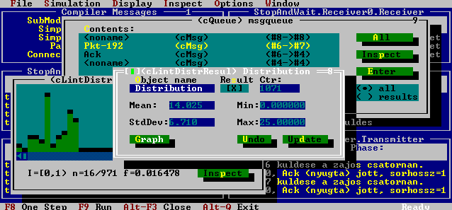
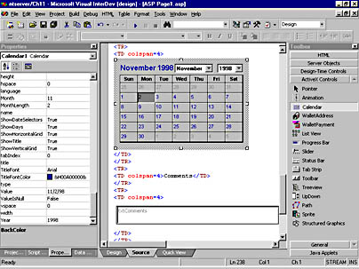
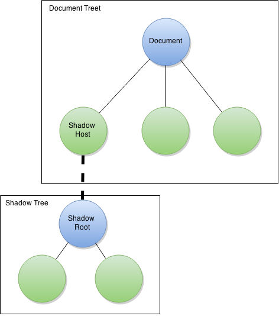

WebComponents and modern web frameworks |
|
Ahmad Atighechi @ahmad2x4 |
Component !?

Turbo Vision (text base UI control set)
Talking about web !?

Visual InterDev (calendar component)
Recent technologies
</div>
</div>
</div>
</div>
</div>
</div>
</div>
</div>
Why do we need web components?
Current developers' experience in reusing widgets is really poor
How does Web Components (WC) help?
Encapsulation
Componentization
Encapsulation
Why?
Current Encapsulation method
<iframe src="foo.htm"></iframe>
Componentization
- Complexity Management
- Product Flexibility
- Collaboration
- Easier to reason about your code
What are web components?
A set of HTML5 standards
- Shadow DOM In progress (V1 milestone)
- HTML Templates
- Custom Element In progress (V1 milestone)
- HTML Import In progress
Shadow DOM
Element (shadow host)
Shadow tree has encapsulation
Shadow Root
Shadow Tree
Shadow DOM
Example
HTML Templates

Hello World
var template = document.querySelector('#foo');
var container = document.querySelector('#container');
var clone = document.importNode(template.content, true);
//Creating shadow root and appending cloned template
var root = container.createShadowRoot();
root.appendChild(clone);
//To check if browser support native template
if ('content' in document.createElement('template')){
}
Custom Element
<li/>
<p/>
<div/>
<h1/>
Readable markup
How do I use WebComponent in my HTML page
Comment 2
Comment 2
Asnwer 1
Commnet 3
Custom Element (Definition)
var XFavButton = document.registerElement('stack-favorite-button');
document.body.appendChild(new XFavButton());
Or
var XFavButton = document.registerElement('stack-favorite-button',{
prototype: Object.create(HTMLButtonElement.prototype),
extends: 'button'
}
);
document.body.appendChild(new XFavButton());
HTML Import
javascript..... <script/>
image.......... <img/>
css............ <link/>
video.......... <video/>
HTML........... ????
HTML Import (Basics)
<head>
<link rel="import" href="/path/to/imports/stuff.html">
</head>
How to use imported HTML
<script>
var link = document.querySelector('link[rel="import"]');
var content = link.import;
// Clone the <template> in the import.
var template = content.querySelector('template');
var clone = document.importNode(template.content, true);
document.querySelector('#container').appendChild(clone);
</script>
Browser support
| Chrome | Opera | Firefox | Safari | Edge | |
| Templates | 26 | 15 | 22 | 7.1 | 13 |
| HTML Imports | 36 | 23 | On Hold | Low | |
| Custom Elements | 33 | 20 | Behind Flag | in dev | Medium |
| Shadow DOM | 25 | 15 | Behind Flag | in dev | High |
What does community do with in-progress standard?
Polyfill
Webcomponentjs
bower install --save webcomponentsjs
Demo
Standard Compatibility
| Shadow DOM | |
| HTML Import | |
| HTML Template | |
| Custom Element |
Webcomponents-lite
| Shadow DOM | |
| HTML Import | |
| HTML Template | |
| Custom Element |
Includes all polyfills except for shadow DOM.
Angular 2

Demo
Standard Compatibility
| Shadow DOM | |
| HTML Import | |
| HTML Template | |
| Custom Element |
Polymer
Demo
Standard Compatibility
| Shadow DOM | |
| HTML Import | |
| HTML Template | |
| Custom Element |
MOAR about Polymer
- Registration and manage lifecycle of elements
- Extend native HTML
- Two-way binding and attribute reflection
- Responsive to property and attribute change
- Local DOM
- Events
- Behaviors
Links:
QA
Slides http://ahmad2x4.github.io/WCompTalk
DDDSydney Thanks our sponsors